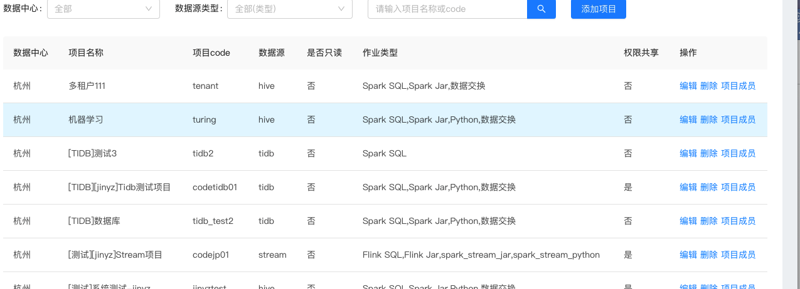
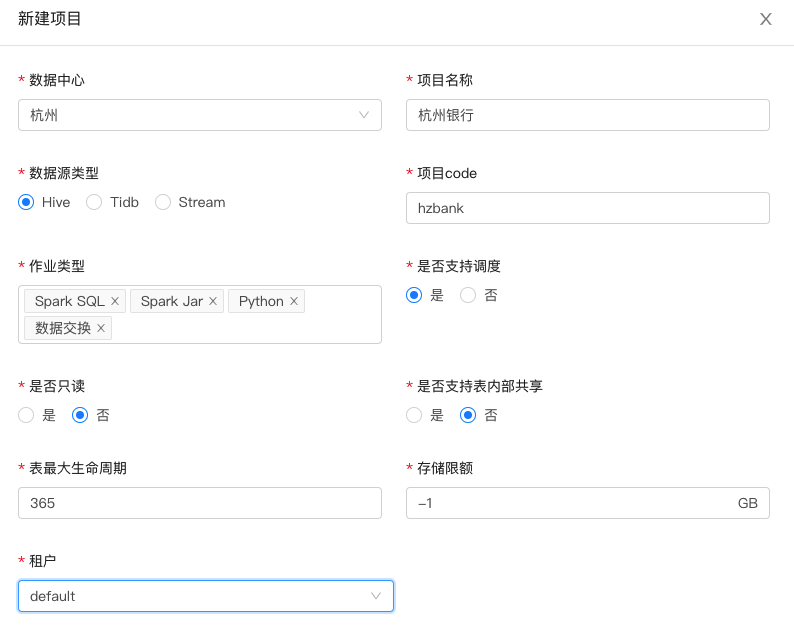
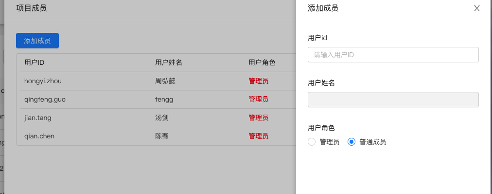

3.5.1 项目管理
项目管理模块是对平台所有的项目空间的管理.
展示了所有的项目空间的信息，平台管理员和项目管理员可以对项目编辑，删除，添加项目成员。

3.5.1.1 新建项目
点击添加项目 可以新建新的项目 如图： 
字段含义介绍
- 项目名称 项目空间的名称
- 数据源类型 支持的数据源 HIVE(数仓) TIDB(分布式关系型) Stream(流)
- 项目code 项目的唯一标识
- 作业类型 不同的数据源类型支持不同的作业类型
- 是否支持调度 默认配置是 支持发布调度任务
- 是否只读 默认配置否 项目空间下的表有读写权限
- 是否支持表内部共享 默认配置否 项目空间下的表对项目成员是否共享
- 表最大生命周期 默认365
- 存储限额 多租户模块的存储资源的限制 -1不限制 单位GB
- 租户 多租户模块租户code 将项目绑定到某个具体的租户上
3.5.1.2 添加项目成员
点击添加项目成员 如下图所示：

输入用户ID 回车 选择用户角色 提交 添加人员到项目中。